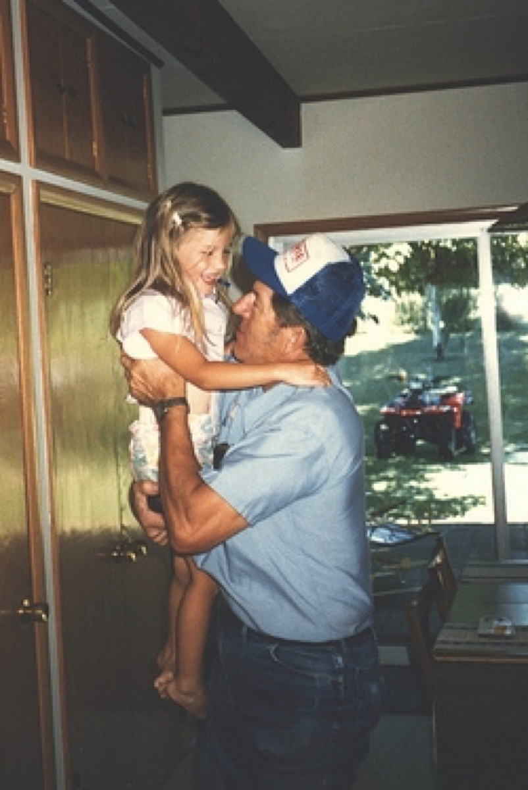
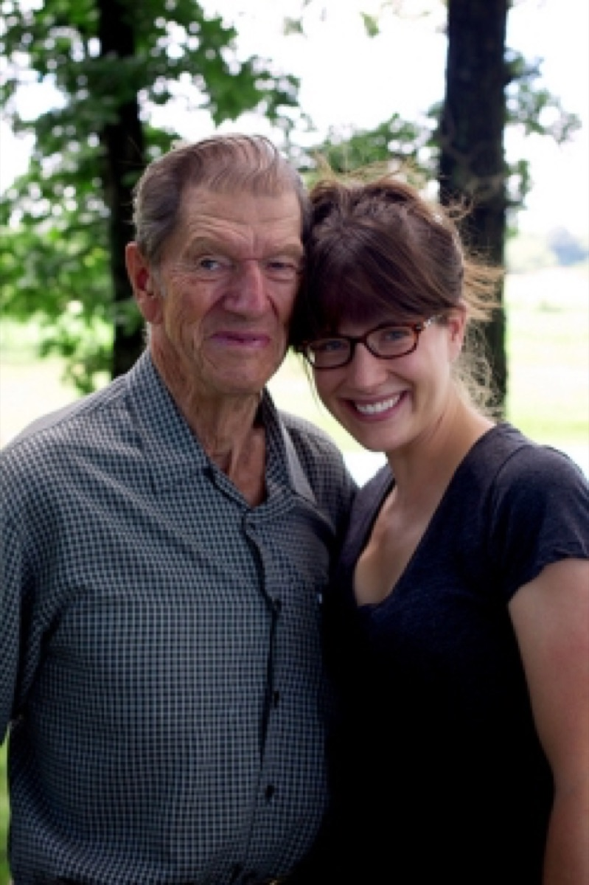

Strawberry Shortcake
This has been the first summer that has really felt like summer to me in a long time. Soaring temperatures, breezy bike rides, patio drinking, vacations, great food, old friends, new friends, grad school classes, and barely a moment to sit still - just the way I like it.
I've been fortunate to spend a lot of time with my family this summer and we recently had a large reunion for my father's side of the family. My grandparents had six children and - counting spouses and great grandchildren - there are about 40 of us now. We are lucky to be so close-knit for a large family, especially considering that we are spread throughout the country and the world.
 
The driving force behind this family reunion was to celebrate my grandfather's 90th birthday. That's the two of us in 1986 and again just recently. We spent three days in Lake Geneva, Wisconsin dining, going through old photos, and enjoying my grandfather's land. I'm hoping I inherited some of my grandparent's good genes - they are both in excellent shape. In fact, my grandfather's birthday gift was a new chainsaw and he and my father are out at the land clearing away fallen trees from the most recent storm as I write this.
It's hard to believe it is already August. I've started to frantically make all of the summer dishes that I know I will miss when late September rolls around. Growing up, strawberry shortcake usually included store bought angel food cake. While I still have a special place in my heart for that distinctive flavor, you can't beat the real thing. The shortcakes in this recipe are easy to make and it's worth turning on the oven for in the hot August heat.
Strawberry Shortcake
Serves 10
For the shortcakes:
Ingredients
4 C all-purpose flour
2 Tbl baking powder
¾ tsp. salt
6 Tbl sugar
1 ½ sticks (12 Tbl) cold unsalted butter, cut into small pieces
1 ½ C cold heavy cream
Method
I use Dorie Greenspan's recipe for Tender Shortcakes, which you can find here.
For the strawberries and cream:
Ingredients
2 lb fresh strawberries, rinsed
2 Tbl sugar
1 ½ C cold heavy cream
Method
Thinly slice the strawberries. Add to a medium bowl and add the sugar. Gently toss the strawberries to coat and let them sit at room temperature for about 20 minutes, periodically stirring to distribute the sugar. Refrigerate until you are ready to use the mixture.
Just before you are ready to serve the strawberry shortcakes, add the heavy cream to medium bowl and whip with a hand mixer until light and airy. Don't over mix.
To serve, place a shortcake on a plate (you can gently slice them in half if you'd like, but I leave them whole), top with a few dallops of whipped cream and a few spoonfuls of strawberries.